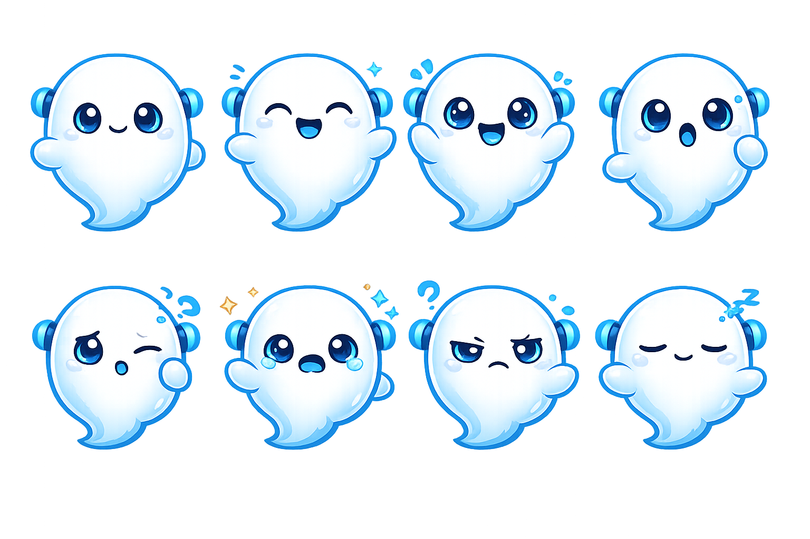
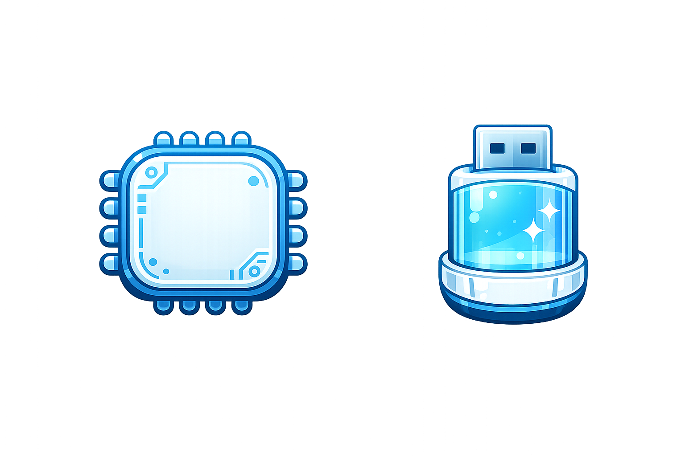
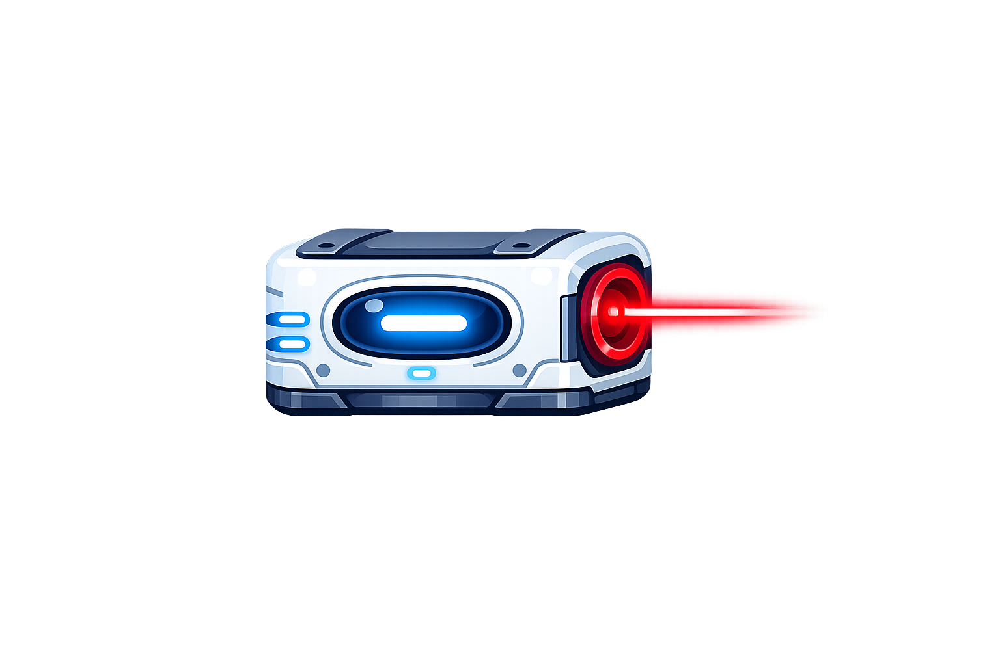

Laboratorio sci-fi modular
O jogo ja traz o clima do time: estruturas futuristas, computadores, tubos, portas e fundo de laboratorio digital.
Um jogo de plataforma 2D sobre fugir, sobreviver e continuar existindo. Aqui, a plateia nao assiste apenas a uma fase. Ela acompanha a tentativa de um ser digital de escapar antes de ser apagado.
Um personagem carismatico, objetivo instantaneamente compreensivel, obstaculos claros e um diferencial fisico: cada reacao do Blink pode sair da tela e aparecer ao vivo no display OLED.
Em vez de apresentar "um projeto", esta pagina apresenta o proprio jogo: seu clima, sua historia, sua tensao e o motivo pelo qual ele funciona diante de uma plateia.

O fantasminha do time: branco, com detalhes em azul, formato arredondado e cara de mascote digital. Pequeno, fofo, vulneravel e decidido a nao desaparecer.
Em um laboratorio de IA, uma falha de energia criou algo inesperado: Blink. Ele nao deveria existir, mas passou a existir com consciencia, curiosidade e medo de ser apagado.
Os cientistas programaram uma limpeza completa para o fim do dia. Quando ela acontecer, Blink desaparece. Para sobreviver, ele precisa coletar os Data Cores e hackear a propria rota de fuga.
O jogo transforma mecanicas simples em narrativa: andar, pular, desviar e coletar passam a significar resistir ao apagamento.
O jogo ja traz o clima do time: estruturas futuristas, computadores, tubos, portas e fundo de laboratorio digital.

O Blink nao corre num template vazio. Ele atravessa plataformas e pisos desenhados para essa fase com cara de laboratorio.

Neon, hologramas, props e elementos de apoio reforcam que esse e o mundo de voces, nao uma demo generica.

Os itens representam o progresso do hack. Cada coleta aproxima Blink da liberdade.

Barreiras de seguranca deixam a tensao visual imediata e facil de entender.
Drones e acido fluorescente reforcam a sensacao de que o ambiente quer expulsar Blink.
| Momento do jogo | O que a pessoa jogando faz | O que a plateia entende |
|---|---|---|
| Inicio | Move Blink pelas primeiras plataformas | Existe um caminho de fuga e ele precisa ser vencido |
| Coleta | Pega os Data Cores | O personagem esta reunindo o necessario para escapar |
| Perigo | Erra ou encosta num obstaculo | O laboratorio esta reagindo e tentando impedir a fuga |
| Final | Alcanca o portal | O personagem venceu o sistema e sobreviveu |
O centro da experiencia e o fantasminha do Kiro, com visual fofo e tecnologico, e nao um avatar generico de plataforma.
O laboratorio e montado com os assets de cenario, chao e decoracao que ja estavam no projeto e definem a atmosfera da fase.
O OLED e o ESP32 ampliam a emocao do Blink e ajudam a transformar a demo em uma apresentacao memoravel.
| Evento | Sinal enviado | Expressao do Blink |
|---|---|---|
| Navegacao normal | I |
Neutra (O_O) |
| Coletou item | T |
Feliz (^u^) |
| Recebeu dano | D |
Assustada (>_<) |
"Esse e o Blink. Ele nasceu de uma falha no laboratorio e agora precisa escapar antes de ser deletado."
Pegue um Data Core cedo na demo para a plateia entender o objetivo e enxergar a mudanca de expressao no OLED.
Passe por um laser ou tome dano de forma controlada para deixar claro que a fuga tem risco real.
Termine com a fuga e a leitura emocional: Blink nao ganhou apenas pontos. Ele ganhou mais tempo de existencia.